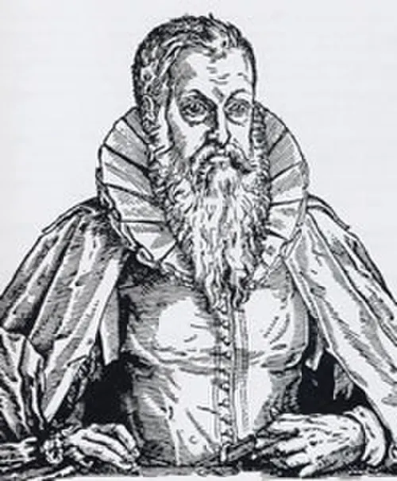
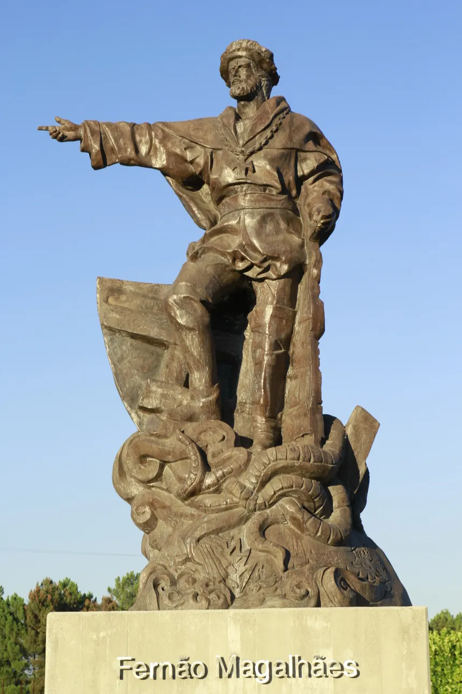

Quinhentismo no Brasil
Autores


Obras
- A carta de Pero Vaz de Caminha.
Sobre a carta de Pero Vaz de Caminha- A carta de mestre João Faras.
- Relação do piloto anônimo.
- Cartas de Pe. Manuel da Nóbrega.
- Arte de gramática da língua mais usada na costa do Brasil (1595), de Pe. José de Anchieta.
- Duas viagens ao Brasil (1557), de Hans Staden.
- Auto da festa de São Lourenço (1583), texto teatral de Pe. José de Anchieta.
Mais ObrasContexto Histórico
Final da Idade Média (476-1453) foi marcado pelo aperfeiçoamento e uso da bússola, na navegação, e da pólvora, na fabricação de armas. Esses fatores deram ao ser humano uma sensação de independência em relação às forças divinas, pois, com tamanho poder, eles se viram capazes de vencer os obstáculos da natureza, atravessar o mar e conquistar novas terras. O uso bússola permitiu o surgimento das Grandes Navegações, já a pólvora fez os europeus invencíveis no domínio das novas terras. Dessa forma, nos séculos XV e XVI, Portugal buscou expandir os seus domínios. Houve, então, expedições para a África, Ásia e América. Esta, oficialmente, descoberta por Cristóvão Colombo (1451-1506) em 12 de outubro de 1492. Tanto por meio das descrições de Pero Vaz de Caminha ou das peças e poemas do Padre José de Anchieta, é possível perceber traços do momento histórico que o país passava.
Literatura de Informação
A "literatura de informação" refere-se a textos cuja função principal é transmitir conhecimento e dados de forma clara e objetiva, diferentemente da literatura ficcional, que prioriza a narrativa e a estética. Essa categoria abrange diversos gêneros e formatos, sendo fundamental para a disseminação do conhecimento em áreas acadêmicas, científicas e profissionais.
Características
- Objetividade: Foca na apresentação clara e precisa de informações, evitando opiniões ou subjetividades.
- Estrutura Clara: Geralmente possui uma organização lógica, com seções, subtítulos e parágrafos bem definidos.
- Propósito Educacional: O principal objetivo é informar, educar e esclarecer, muitas vezes em contextos acadêmicos, científicos ou jornalísticos.
- Recursos Visuais: Frequentemente incorpora gráficos, tabelas, ilustrações e imagens para facilitar a compreensão e tornar a informação mais atraente.
- Referências e Citações: Inclui fontes de pesquisa e referências para validar a informação, permitindo ao leitor verificar a veracidade dos dados apresentados.
Literatura de Formação
Também conhecida como literatura catequética, esse grupo literário é composto por poemas, cartas, sermões e peças de teatro produzidos pelos padres jesuítas que desembarcaram no Brasil no início da colonização. De modo breve, é possível dizer que tais produções tinham como principal função catequizar os nativos do território. A catequização pode ser compreendida como uma espécie de colonização religiosa, haja vista que os deuses e cultos indígenas foram demonizados pelos jesuítas, que impuseram o catolicismo na região. Dessa forma, portanto, o Estado português dominou o território, e a Igreja Católica colonizou a religião dos nativos.
Características:
- Desenvolvimento do Personagem: O enredo gira em torno do crescimento emocional, psicológico e moral do protagonista, mostrando suas experiências de vida e aprendizados.
- Fases da Vida: Geralmente, a narrativa abrange diferentes fases da vida do protagonista, como a infância, adolescência e transição para a vida adulta.
- Conflitos Internos: O protagonista frequentemente enfrenta dilemas internos e conflitos que contribuem para seu desenvolvimento pessoal e compreensão de si mesmo.
- Ambiente Sociocultural: O contexto social e cultural desempenha um papel importante, influenciando as decisões e o crescimento do personagem.
- Busca por Identidade: Muitas histórias de formação exploram a busca do protagonista por sua identidade, lugar no mundo e propósito de vida.
Carta aos Navegantes
A "Carta de Pedro Álvares Cabral", embora menos conhecida que a carta de Caminha, foi escrita para o rei Dom Manuel I de Portugal e relata a viagem de Cabral e suas descobertas no Novo Mundo. Cabral foi enviado em uma missão para explorar e conquistar novas terras, estabelecer rotas comerciais e reforçar a presença portuguesa na Índia.
Na carta, Cabral menciona a chegada ao Brasil, descrevendo a terra como rica e cheia de potencial para a exploração. Ele reconhece a importância estratégica do território para os interesses portugueses. O relato sobre as relações com os indígenas também é abordado, onde Cabral comenta sobre o primeiro contato, similar ao que foi feito por Caminha, ressaltando a curiosidade e a receptividade dos nativos.
Cabral destaca as riquezas naturais que poderiam ser exploradas, o que levou à rápida colonização e exploração do Brasil pelos portugueses nos anos seguintes. Embora a carta de Cabral não tenha o mesmo nível de detalhes descritivos que a de Caminha, ela ainda apresenta informações cruciais sobre a expedição, os desafios enfrentados e as expectativas de retorno ao rei.
A "Carta de Pedro Álvares Cabral" é significativa para entender as motivações e os objetivos da Coroa Portuguesa durante o período das Grandes Navegações, além de fornecer um contexto sobre a política colonial da época.
Exercícios
Questão 1
Das opções abaixo, a que não faz parte das características do Quinhentismo é a alternativa:
Questão 2
A famosa “Carta de achamento do Brasil”, mais conhecida como “A carta de Pero Vaz de Caminha”, foi o primeiro manuscrito que teve como objeto a terra recém-descoberta. Nela encontramos o primeiro registro de nosso país, feito pelo escrivão do rei de Portugal, Pero Vaz de Caminha. Podemos inferir, então, a seguinte intenção dos portugueses: